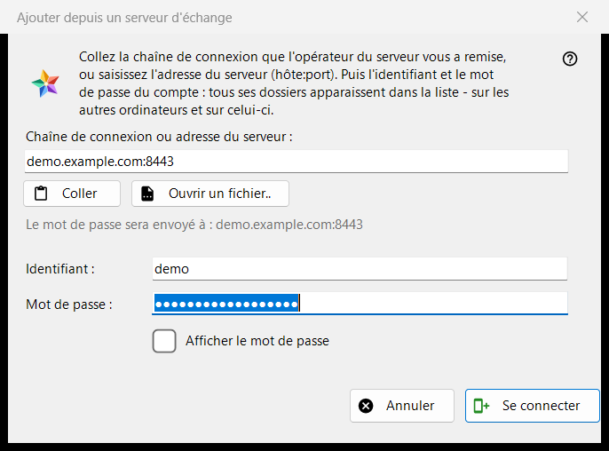
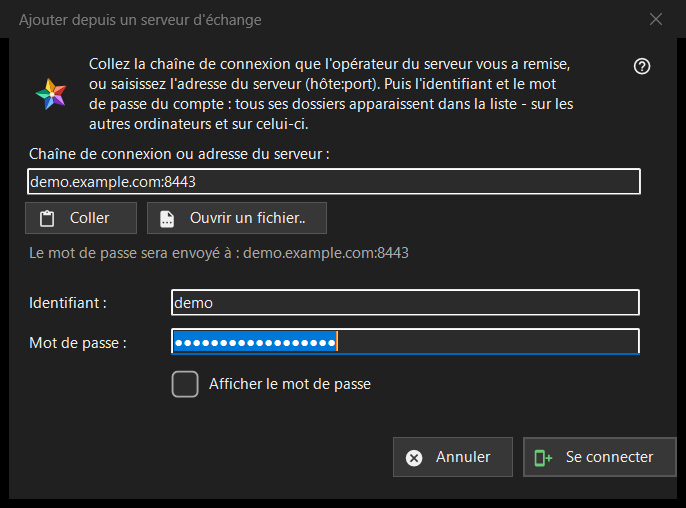

Ajouter depuis un serveur d'échange
Objectif
Connecte cet ordinateur à un compte sur un serveur d'échange, de sorte que les dossiers de tous les appareils de ce compte apparaissent dans la liste des ressources. La fenêtre s'ouvre depuis le bouton «Ajouter depuis un serveur d'échange..» de la section «Mes appareils» de la liste des ressources, et lorsque vous déposez une chaîne ou un fichier de connexion sur le programme ou en saisissez une dans la zone de dossier.


Dans cet ordre
- Collez la chaîne de connexion de l'opérateur du serveur, saisissez l'adresse sous la forme hôte:port ou appuyez sur «Ouvrir un fichier..».
- Vérifiez la ligne «Le mot de passe sera envoyé à : ..» : cette adresse est le seul endroit où va le mot de passe.
- Saisissez l'identifiant et le mot de passe.
- Appuyez sur «Se connecter».
- Si le programme interroge sur le certificat du serveur, comparez l'empreinte avec celle que l'opérateur a indiquée.
Les éléments
Chaîne de connexion ou adresse
La première zone accepte une chaîne de connexion (elle commence par FMSEXCH1:) ou une adresse sous la forme hôte:port. «Coller» la remplit depuis le presse-papiers, à partir d'un texte ou de l'image d'un code QR, et «Ouvrir un fichier..» lit un fichier .fmsexch ou une image QR. Coller ne fait que remplir le formulaire : rien n'est envoyé tant que vous n'appuyez pas sur «Se connecter». La ligne sous la zone montre où ira le mot de passe ; une adresse web, un code de dossier ou une chaîne endommagée y sont refusés en termes simples.
Identifiant et mot de passe
«Identifiant :» est rempli à partir de la chaîne lorsqu'elle en contient un. «Mot de passe :» est masqué ; «Afficher le mot de passe» le révèle. Quand vous appuyez sur «Se connecter», les zones de mot de passe sont vidées avant que le premier octet ne quitte l'ordinateur. La ligne d'état montre la progression et, en cas d'échec, la raison : un identifiant ou un mot de passe qui ne convenait pas, trop de tentatives, un serveur qui ne répond pas.
Une chaîne d'invitation
Une chaîne qui est une invitation nomme déjà le serveur et fait passer la fenêtre à la création d'un compte : «Mot de passe encore une fois :» et une note sur la règle du mot de passe apparaissent (au moins 10 caractères, avec une lettre latine majuscule, une minuscule et un chiffre), et le bouton devient «Créer le compte». Le dernier mot sur la règle revient au serveur.
Le certificat du serveur
Si le certificat est inconnu, une question affiche son empreinte et demande s'il faut faire confiance au serveur et le mémoriser ; la réponse par défaut est Non. Si la chaîne indique une empreinte et que le serveur en présente une autre, les deux sont affichées, rien n'est mémorisé et aucun mot de passe n'est envoyé.
Se reconnecter
Lorsque la fenêtre est ouverte pour une entrée de serveur existante afin de se reconnecter, elle affiche l'adresse et l'identifiant en lecture seule, et l'empreinte que cette entrée mémorise est l'ancre de confiance.